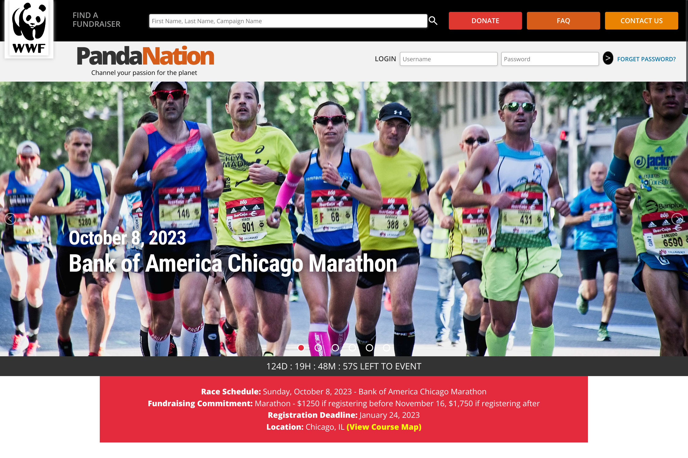
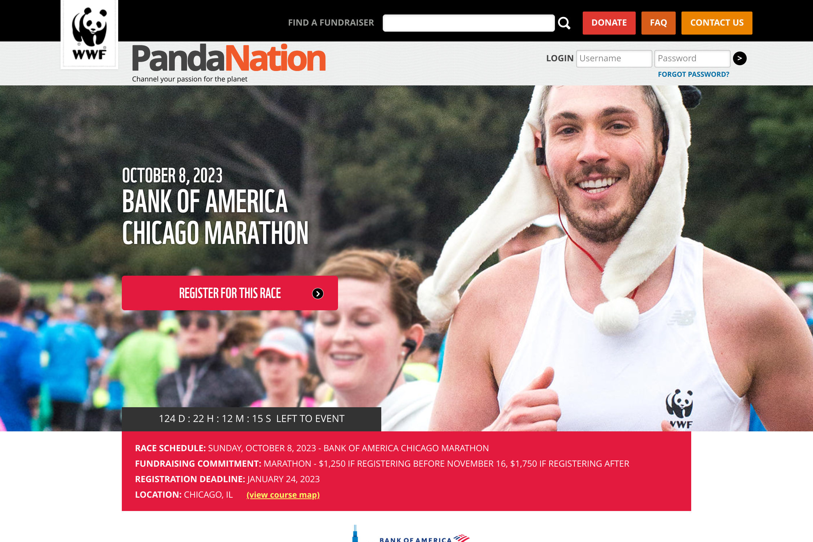
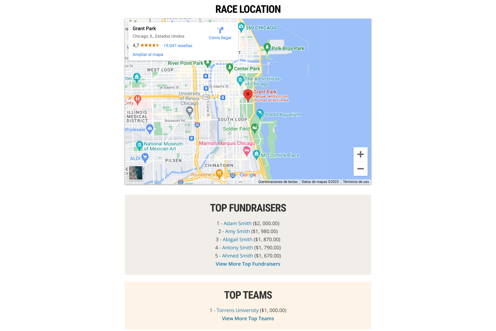

Página de evento de WWF
Resumen
Un amigo que actualmente vive en Australia y está cursando una Master relacionada con la programaciónme me sugerió este proyecto de su curso. Me lo envió como una forma de practicar y poner a prueba mis habilidades actuales como desarrollador frontend, tal como lo hizo a él.
El objetivo del proyecto era imitar una página web real de una organización sin fines de lucro que promociona un evento benéfico, además de cumplir con algunos requisitos adicionales establecidos por el profesor del curso que estaban diseñados para probar ciertas habilidades. Para no complicar demasiado las cosas, construí la misma página web del evento de WWF que mi amigo hizo, que promociona y detalla la participación de WWF en el maratón de Chicago 2023.
Para este proyecto, imaginé que la organización WWF me había pedido personalmente que construyera esta página web para ellos. Utilicé el resumen del proyecto como guía y el sitio web en vivo como plantilla de diseño, y luego construí todo desde cero. Estoy muy satisfecho con el resultado final y su similitud con el diseño original, y de hecho creo que los elementos adicionales establecidos por los requisitos agregan un toque agradable a la página, aunque a veces esto significaba desviarse del diseño original.
- HTML5
- CSS
- Diseño Web Reactivo
- Javascript (ES6+)
Mi Diseño
El diseño original
Construir el proyecto 🛠️
En mi experiencia, el área de navegación o encabezado es una de las partes más complicadas de construir en una página, y este proyecto no fue diferente. Aquí hay una gran cantidad de elementos que viven juntos, lo que significa que hay muchas partes móviles para redimensionar y reorganizar en diferentes tamaños de pantalla. En el diseño original, hay un diseño para pantallas más pequeñas y otro para pantallas más grandes. Para imitar esto, construí dos áreas de navegación separadas en el documento HTML de esta página, activando o desactivando la correspondiente según el tamaño de pantalla mediante consultas de medios (media queries).
Area de la navigación reactiva

Una de las requisitos del proyecto era tener al menos 6 imágenes mostradas en la página web. El sitio web original no tiene 6 imágenes mostradas, así que decidí que la mejor manera de incluir 6 imágenes sin arruinar demasiado el diseño original sería incluir un carrusel de imágenes (slider). Al mismo tiempo, podría aprovechar el espacio adicional en mi página web proporcionado por las áreas de las imágenes para incluir información clave de la carrera, algo que pensé que un cliente real podría apreciar.
Este requisito mínimo de imágenes también estaba presente en otro proyecto en el que también utilicé un carrusel de imágenes. Podría haberlo copiado y reutilizado, sin embargo, quería mejorar el diseño anterior y practicar más con Javascript, así que encontré este útil tutorial de video que me ayudó a construir un slider de imágenes que también incluye puntos clicables en la parte inferior de la imagen.
Carrusel de imágenes

Una vez que había construido la mitad superior de la página web, la mitad inferior no fue demasiado difícil. Mantuve casi todo el contenido dentro de un contenedor para que no se extendiera demasiado y se viera feo. Además, añadí un video de Youtube y un enlace de Google Maps, que nuevamente eran requisitos del proyecto y que diferían del diseño original, pero creo que funcionan muy bien. Puedo ver fácilmente que el sitio web real incluya dicho contenido para ayudar a sus usuarios a obtener más información sobre el evento. Por último, y para mi sorpresa, encontré que la incorporación de estas dos cosas fue muy fácil gracias a las funciones de incorporación integradas en los videos de Youtube y en Google Maps.
La parte inferior de la página
Reflexión sobre el proyecto 🤔
Este proyecto fue un gran impulso para mi confianza en mis habilidades de diseño de páginas web, CSS y diseño web responsivo. ¡Construí una página web que se parece mucho a un sitio web profesional desde cero y por mí mismo! Este proyecto me ha dado la creencia de que realmente puedo crear sitios web hermosos, funcionales y receptivos, lo cual solo me ha motivado a hacer más y mejorar.
Sin embargo, todavía hay mucho por mejorar, y uno de esos aspectos es Javascript. Para crear el carrusel de imágenes, el contador de cuenta regresiva y el menú desplegable, necesité ayuda de tutoriales o sitios web, lo cual es frustrante. Me gustaría alcanzar un nivel lo suficientemente bueno como para poder construir la mayoría de estas cosas por mí mismo, con solo un poco de ayuda y corrección de otros. Sin embargo, ver lo que se puede hacer con Javascript es emocionante y me motiva aún más a seguir adelante y aprender más.
Por último, al igual que en mi otro proyecto relacionado con WWF, me pareció extraño el requisito de este proyecto de usar consultas multimedia HTML dentro de la etiqueta <head>, especialmente porque todo mi aprendizaje en línea indicaba que la forma estándar de la industria de usar consultas multimedia es dentro de un archivo CSS. Aunque fue bueno practicar este otro método de crear sitios web receptivos, descubrí rápidamente que no me gustaba porque requería varios archivos CSS individuales. Esto resultó en una gran duplicación de código, muchas adiciones y eliminaciones manuales de código CSS, y a menudo me dejaba confundido al tratar de manejar mucho código similar en tres documentos diferentes.